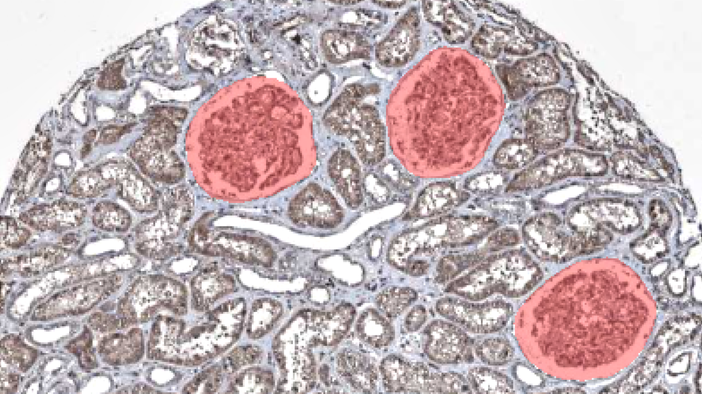
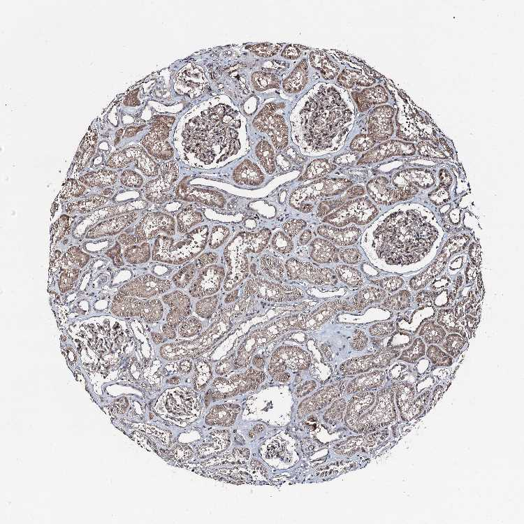
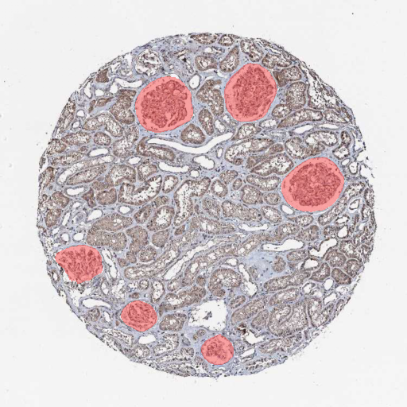
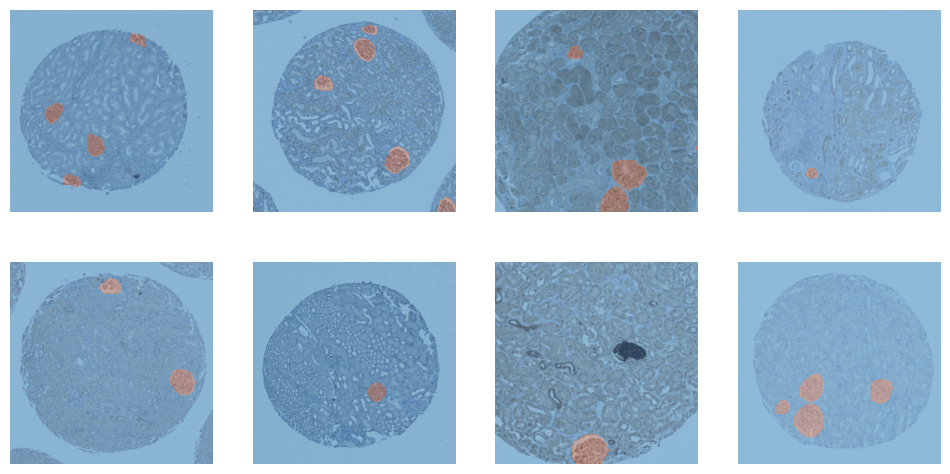
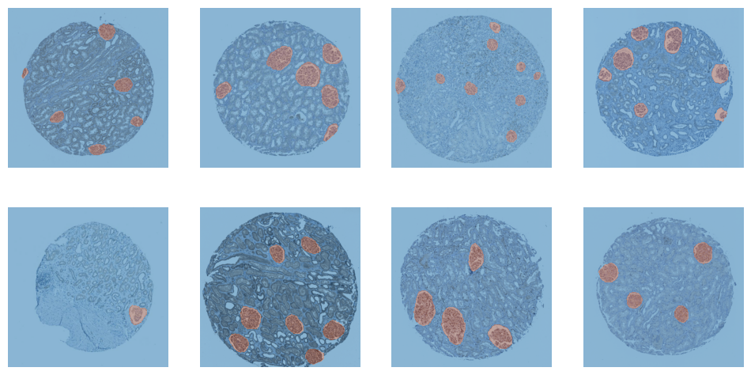
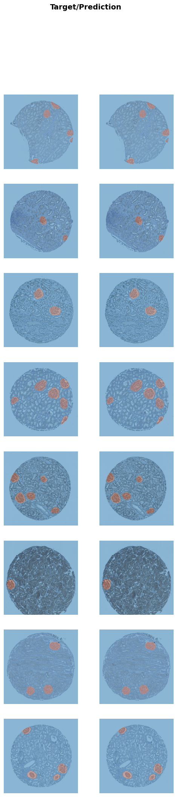

import numpy as np
import pandas as pd
import monai
from fastai.vision.all import *
import segmentation_models_pytorch as smpGlomerulus Segmentation
deep learning
image segmentation
Training an Unet++ with fastai to segment glomeruli.

Model Training Notebook
Here we train a Unet++ architecture with a pretrained efficientnet-b4 backbone from the awesome segmentation_models_pytorch library. Data loading, transforming, the actual training and, finally, exporting the newly trained model, we use fastai.
Here’s a running example of the model trained with this notebook.
Goal
Segmenting glomeruli (an intricate structure in the kidney’s cortex in which the blood filtration happen), i.e. turning this
 to this 
Data
I am using training data from the HuBMAP Challenge hosted on kaggle and a few dozen images downloaded from the Human Protein Atlas I annotated myself. (If you’re interested in how to do this, here a blogpost I wrote)
ORGAN = "kidney"
TRAIN_BATCH_SIZE = 8 # Reduce this, if you run out of cuda memory
EFFECTIVE_BATCH_SIZE = 8 # This is the batch size that will be used for training
IMAGE_SIZE = 512
LR = 3e-4
EPOCHS = 60
MODEL_NAME = f"smp_{IMAGE_SIZE}_{ORGAN}_added_data"
DATA_PATH = Path("../data/")# Reproducibility
TESTSET_SEED = 93
TRAIN_VAL_SEED = 43df = pd.read_csv(DATA_PATH/"train.csv") # This is the training set from the competition
fns = L([*get_image_files(DATA_PATH/"test_images"), *get_image_files(DATA_PATH/"train_images")]) # List of all competition images
fn_col = [] # This will be a column in the dataframe, containing the filenames
for _, r in df.iterrows(): fn_col.append([fn for fn in fns if str(r["id"]) == fn.stem][0])
df["fnames"] = fn_col
df["is_organ"] = df.organ.apply(lambda o: o==ORGAN)
df = df[df.is_organ] # Only keep images with the organ we are interested in
assert df.organ.unique()[0] == ORGAN
df = df.drop(columns="organ data_source is_organ tissue_thickness pixel_size sex age".split()).copy()# These are the images I added and that are annotated by me
add_images = get_image_files(DATA_PATH/"add_images/")
add_images_masks = get_image_files(DATA_PATH/"segs/")# The masks have the same name as the images, but with "_mask" appended
masks = [p.name[:-9]+".png" for p in add_images_masks]
# Delete images without masks
images_to_delete = [p for p in add_images if p.name not in masks]
for p in images_to_delete: p.unlink()
# This will contain the masks in the same order as the images
sorted_masks = []
for i in add_images:
sorted_masks.append([p for p in add_images_masks if i.stem == p.stem[:-5]][0])# Combine the competition data with the added data
add_df = pd.DataFrame({
"fnames": add_images,
"segmentation": sorted_masks,
"is_add": [True]*len(add_images)
})
df["is_add"] = df.id.apply(lambda p: False)
combined_df = pd.concat([df, add_df])# Setting aside a random testset
cut = int(0.1 * len(combined_df))
ind = np.arange(len(combined_df))
np.random.seed(TESTSET_SEED) # Always create the same testset
np.random.shuffle(ind)
test_ind = ind[:cut]
train_valid_ind = ind[cut:]
test_df = combined_df.iloc[test_ind,:].copy()
train_df = combined_df.iloc[train_valid_ind,:].copy()The masks of the competition data are in run-length encoding, that’s why we need the following function. It converts the run-length encoding to a numpy array which we can use for training.
# From: https://www.kaggle.com/code/paulorzp/run-length-encode-and-decode/script
def rle_decode(mask_rle, shape):
'''
mask_rle: run-length as string formated (start length)
shape: (height,width) of array to return
Returns numpy array, 1 - mask, 0 - background
'''
s = mask_rle.split()
starts, lengths = [np.asarray(x, dtype=int) for x in (s[0:][::2], s[1:][::2])]
starts -= 1
ends = starts + lengths
img = np.zeros(shape[0]*shape[1], dtype=np.uint8)
for lo, hi in zip(starts, ends):
img[lo:hi] = 1
return np.reshape(img, shape)CODES = ["Background", "FTU"] # FTU = functional tissue unitdef x_getter(r): return r["fnames"]
def y_getter(r):
# My additional annotations are saved as pngs, so I need to differ between the two
if r["is_add"]:
im = np.array(load_image(r["segmentation"]), dtype=np.uint8)
im = (im.mean(axis=-1) < 125).astype(np.uint8)
return im
rle = r["rle"]
shape = (int(r["img_height"]), int(r["img_width"]))
return rle_decode(rle, shape).Tbtfms = aug_transforms(
mult=1.2,
do_flip=True,
flip_vert=True,
max_rotate=45.0,
min_zoom=1.,
max_zoom=1.5,
max_lighting=0.3,
max_warp=0.3,
size=(IMAGE_SIZE, IMAGE_SIZE),
p_affine=0.5
) # Data augmentation
dblock = DataBlock(blocks=(ImageBlock, MaskBlock(CODES)),
get_x=x_getter,
get_y=y_getter,
splitter=RandomSplitter(seed=TRAIN_VAL_SEED),
item_tfms=[Resize((IMAGE_SIZE, IMAGE_SIZE))],
batch_tfms=btfms)
dls = dblock.dataloaders(train_df, Path(".."), bs=TRAIN_BATCH_SIZE)dls.train.show_batch()
dls.valid.show_batch()
cbs = [
GradientAccumulation(EFFECTIVE_BATCH_SIZE),
SaveModelCallback(fname=MODEL_NAME),
]model = smp.UnetPlusPlus(
encoder_name="efficientnet-b4",
encoder_weights="imagenet",
in_channels=3,
classes=2,
)# Splitting model's into 2 groups to use fastai's differential learning rates
def splitter(model):
enc_params = L(model.encoder.parameters())
dec_params = L(model.decoder.parameters())
sg_params = L(model.segmentation_head.parameters())
untrained_params = L([*dec_params, *sg_params])
return L([enc_params, untrained_params])learn = Learner(
dls,
model,
cbs=cbs,
splitter=splitter,
metrics=[Dice(), JaccardCoeff(), RocAucBinary()])learn.fit_flat_cos(EPOCHS, LR)| epoch | train_loss | valid_loss | dice | jaccard_coeff | roc_auc_score | time |
|---|---|---|---|---|---|---|
| 0 | 0.727570 | 0.603148 | 0.085859 | 0.044855 | 0.322773 | 00:12 |
| 1 | 0.604307 | 0.516570 | 0.096767 | 0.050843 | 0.427407 | 00:11 |
| 2 | 0.508117 | 0.379248 | 0.522587 | 0.353718 | 0.314975 | 00:11 |
| 3 | 0.424914 | 0.302621 | 0.584612 | 0.413040 | 0.085511 | 00:11 |
| 4 | 0.353784 | 0.207627 | 0.712757 | 0.553709 | 0.128719 | 00:11 |
| 5 | 0.296790 | 0.142182 | 0.830598 | 0.710276 | 0.556589 | 00:11 |
| 6 | 0.250124 | 0.107157 | 0.849849 | 0.738903 | 0.781829 | 00:11 |
| 7 | 0.211806 | 0.088498 | 0.857634 | 0.750752 | 0.867223 | 00:11 |
| 8 | 0.180824 | 0.070990 | 0.859145 | 0.753071 | 0.888895 | 00:11 |
| 9 | 0.154632 | 0.061644 | 0.856697 | 0.749318 | 0.929199 | 00:11 |
| 10 | 0.133044 | 0.052796 | 0.868353 | 0.767336 | 0.953055 | 00:11 |
| 11 | 0.115005 | 0.046287 | 0.871848 | 0.772811 | 0.964127 | 00:11 |
| 12 | 0.099967 | 0.040762 | 0.883804 | 0.791800 | 0.971401 | 00:11 |
| 13 | 0.087097 | 0.037157 | 0.889235 | 0.800560 | 0.976527 | 00:11 |
| 14 | 0.076725 | 0.033152 | 0.899692 | 0.817673 | 0.979948 | 00:12 |
| 15 | 0.068125 | 0.031111 | 0.902548 | 0.822404 | 0.982294 | 00:11 |
| 16 | 0.060929 | 0.027760 | 0.910408 | 0.835549 | 0.984009 | 00:11 |
| 17 | 0.054637 | 0.027974 | 0.894529 | 0.809184 | 0.983233 | 00:11 |
| 18 | 0.049165 | 0.024334 | 0.911780 | 0.837864 | 0.986022 | 00:11 |
| 19 | 0.044277 | 0.024281 | 0.905008 | 0.826498 | 0.983716 | 00:11 |
| 20 | 0.040233 | 0.022132 | 0.913338 | 0.840498 | 0.986142 | 00:11 |
| 21 | 0.036737 | 0.021514 | 0.913032 | 0.839981 | 0.982759 | 00:12 |
| 22 | 0.033632 | 0.020441 | 0.919236 | 0.850543 | 0.988929 | 00:11 |
| 23 | 0.031428 | 0.021564 | 0.900877 | 0.819632 | 0.976978 | 00:11 |
| 24 | 0.029265 | 0.018416 | 0.922131 | 0.855513 | 0.990599 | 00:11 |
| 25 | 0.027243 | 0.017509 | 0.924026 | 0.858781 | 0.990082 | 00:11 |
| 26 | 0.025496 | 0.018210 | 0.916627 | 0.846087 | 0.983598 | 00:11 |
| 27 | 0.024097 | 0.017901 | 0.917531 | 0.847628 | 0.987033 | 00:11 |
| 28 | 0.022979 | 0.016894 | 0.920493 | 0.852697 | 0.986602 | 00:11 |
| 29 | 0.021918 | 0.018380 | 0.916335 | 0.845588 | 0.989573 | 00:11 |
| 30 | 0.020899 | 0.016375 | 0.920465 | 0.852650 | 0.988758 | 00:11 |
| 31 | 0.019700 | 0.014662 | 0.929562 | 0.868394 | 0.988694 | 00:11 |
| 32 | 0.018992 | 0.018643 | 0.906843 | 0.829563 | 0.989722 | 00:11 |
| 33 | 0.018747 | 0.016715 | 0.918087 | 0.848578 | 0.986600 | 00:11 |
| 34 | 0.018041 | 0.015872 | 0.918797 | 0.849792 | 0.982712 | 00:11 |
| 35 | 0.017152 | 0.015625 | 0.922364 | 0.855914 | 0.979253 | 00:11 |
| 36 | 0.016359 | 0.014718 | 0.925542 | 0.861403 | 0.977279 | 00:11 |
| 37 | 0.015855 | 0.012931 | 0.932580 | 0.873676 | 0.987032 | 00:11 |
| 38 | 0.015509 | 0.012442 | 0.932764 | 0.873999 | 0.990109 | 00:11 |
| 39 | 0.015077 | 0.011627 | 0.936922 | 0.881329 | 0.989619 | 00:11 |
| 40 | 0.014742 | 0.011964 | 0.934999 | 0.877933 | 0.987285 | 00:11 |
| 41 | 0.014460 | 0.011784 | 0.937937 | 0.883128 | 0.990435 | 00:11 |
| 42 | 0.014327 | 0.013164 | 0.928118 | 0.865877 | 0.985723 | 00:11 |
| 43 | 0.014337 | 0.012003 | 0.934332 | 0.876757 | 0.987117 | 00:11 |
| 44 | 0.014002 | 0.012138 | 0.935304 | 0.878470 | 0.988768 | 00:11 |
| 45 | 0.013552 | 0.011391 | 0.936339 | 0.880298 | 0.987371 | 00:11 |
| 46 | 0.013122 | 0.012408 | 0.929143 | 0.867663 | 0.983431 | 00:11 |
| 47 | 0.012708 | 0.011765 | 0.932473 | 0.873489 | 0.990839 | 00:12 |
| 48 | 0.012281 | 0.010892 | 0.938805 | 0.884668 | 0.987427 | 00:11 |
| 49 | 0.011792 | 0.010427 | 0.941303 | 0.889115 | 0.986761 | 00:11 |
| 50 | 0.011579 | 0.011140 | 0.938671 | 0.884429 | 0.982990 | 00:11 |
| 51 | 0.011452 | 0.010431 | 0.945001 | 0.895737 | 0.985848 | 00:11 |
| 52 | 0.011334 | 0.010210 | 0.943139 | 0.892396 | 0.987449 | 00:11 |
| 53 | 0.011300 | 0.011088 | 0.937227 | 0.881870 | 0.987982 | 00:11 |
| 54 | 0.011329 | 0.010670 | 0.937806 | 0.882895 | 0.988177 | 00:11 |
| 55 | 0.011342 | 0.010610 | 0.937321 | 0.882035 | 0.989792 | 00:11 |
| 56 | 0.011146 | 0.010468 | 0.938884 | 0.884808 | 0.988132 | 00:11 |
| 57 | 0.011024 | 0.010291 | 0.940346 | 0.887408 | 0.988785 | 00:11 |
| 58 | 0.010618 | 0.010369 | 0.939683 | 0.886228 | 0.988485 | 00:11 |
| 59 | 0.010563 | 0.010375 | 0.939610 | 0.886099 | 0.988654 | 00:11 |
Better model found at epoch 0 with valid_loss value: 0.6031481027603149.
Better model found at epoch 1 with valid_loss value: 0.516569972038269.
Better model found at epoch 2 with valid_loss value: 0.3792479634284973.
Better model found at epoch 3 with valid_loss value: 0.302621066570282.
Better model found at epoch 4 with valid_loss value: 0.20762743055820465.
Better model found at epoch 5 with valid_loss value: 0.14218230545520782.
Better model found at epoch 6 with valid_loss value: 0.10715709626674652.
Better model found at epoch 7 with valid_loss value: 0.0884983241558075.
Better model found at epoch 8 with valid_loss value: 0.07099024951457977.
Better model found at epoch 9 with valid_loss value: 0.06164400279521942.
Better model found at epoch 10 with valid_loss value: 0.0527963824570179.
Better model found at epoch 11 with valid_loss value: 0.046286918222904205.
Better model found at epoch 12 with valid_loss value: 0.04076218977570534.
Better model found at epoch 13 with valid_loss value: 0.037156544625759125.
Better model found at epoch 14 with valid_loss value: 0.0331517718732357.
Better model found at epoch 15 with valid_loss value: 0.031111164018511772.
Better model found at epoch 16 with valid_loss value: 0.027760174125432968.
Better model found at epoch 18 with valid_loss value: 0.024333978071808815.
Better model found at epoch 19 with valid_loss value: 0.024281086400151253.
Better model found at epoch 20 with valid_loss value: 0.022132011130452156.
Better model found at epoch 21 with valid_loss value: 0.021513625979423523.
Better model found at epoch 22 with valid_loss value: 0.020441483706235886.
Better model found at epoch 24 with valid_loss value: 0.018416451290249825.
Better model found at epoch 25 with valid_loss value: 0.017508765682578087.
Better model found at epoch 28 with valid_loss value: 0.016893696039915085.
Better model found at epoch 30 with valid_loss value: 0.016375476494431496.
Better model found at epoch 31 with valid_loss value: 0.0146623644977808.
Better model found at epoch 37 with valid_loss value: 0.012930507771670818.
Better model found at epoch 38 with valid_loss value: 0.01244184747338295.
Better model found at epoch 39 with valid_loss value: 0.01162666454911232.
Better model found at epoch 45 with valid_loss value: 0.011391145177185535.
Better model found at epoch 48 with valid_loss value: 0.010892268270254135.
Better model found at epoch 49 with valid_loss value: 0.010426941327750683.
Better model found at epoch 52 with valid_loss value: 0.010209585539996624.learn.load(MODEL_NAME)Saved filed doesn't contain an optimizer state.<fastai.learner.Learner at 0x7f2dd019eac0>learn.show_results()
# Create a dataloader from the testset
test_dl = dls.test_dl(test_df, with_labels=True)
dice_func = monai.metrics.DiceMetric(include_background=False, reduction="mean")# This function steps through the different thresholds and returns the best one
def get_best_threshold(learn, dl, metric_func, n_steps=17):
"""
Tests `n_steps` different thresholds.
Return the best threshold and the corresonding score.
"""
thresholds = torch.linspace(0.1, 0.9, n_steps)
results = []
res = learn.get_preds(dl=dl, with_input=False, with_targs=True, act=partial(F.softmax, dim=1))
for t in thresholds:
metric_func((res[0][:,1]>t).unsqueeze(1), res[-1].unsqueeze(1))
metric = metric_func.aggregate().item()
metric_func.reset()
results.append((round(t.detach().cpu().item(), ndigits=3), metric))
return sorted(results, key=lambda tpl: tpl[1], reverse=True)[0]best_threshold, _ = get_best_threshold(learn, dls.valid, dice_func)
best_threshold0.6And now we test the model on the training, validation and test set with the best threshold.
def test_model(learn, dl, metric_func, threshold=0.5):
res = learn.get_preds(dl=dl, with_input=False, with_targs=True, act=partial(F.softmax, dim=1))
metric_func((res[0][:,1]>threshold).unsqueeze(1), res[-1].unsqueeze(1))
metric = metric_func.aggregate().item()
metric_func.reset()
return metric
train_dice = test_model(learn, dls.train, dice_func, threshold=best_threshold)
valid_dice = test_model(learn, dls.valid, dice_func, threshold=best_threshold)
test_dice = test_model(learn, test_dl, dice_func, threshold=best_threshold)
for s, d in zip(("Training Dice:", "Valid Dice", "Test Dice"), (train_dice, valid_dice, test_dice)):
print(s, d)Training Dice: 0.9252251982688904
Valid Dice 0.9271063208580017
Test Dice 0.9414731860160828# Save and export the model
BEST_MODEL_NAME = f"unetpp_b4_th{int(best_threshold*100)}_d{str(test_dice)[2:6]}"
learn.save(BEST_MODEL_NAME)
learn.export(BEST_MODEL_NAME+".pkl")A live version of this model is deployed on a huggingface space.